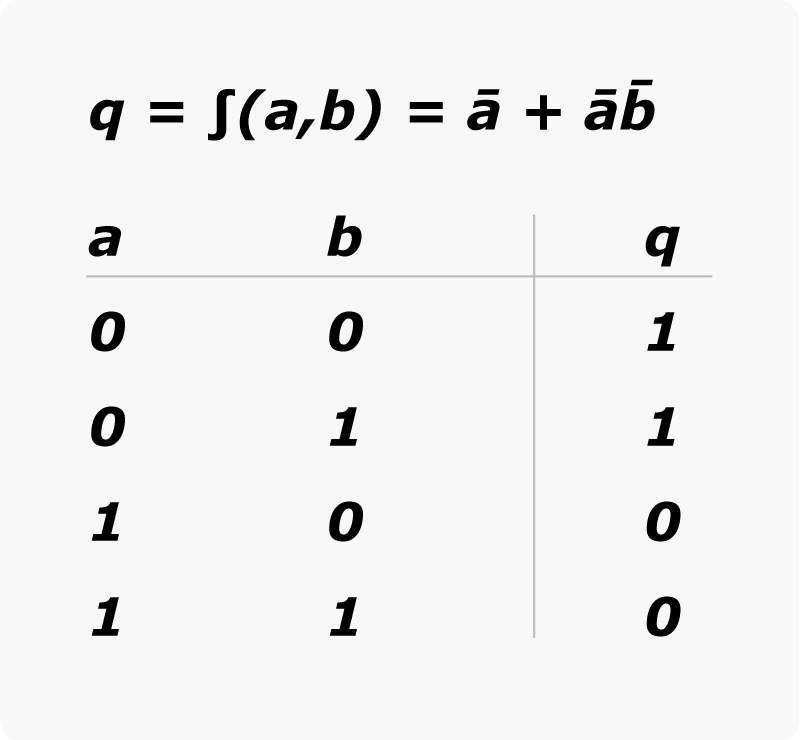
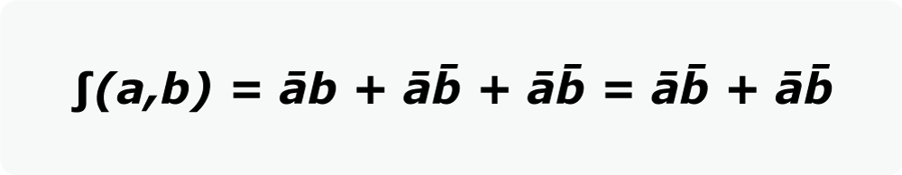

Álgebra de boole
Descripción
Es una rama especial del álgebra que se usa principalmente en electrónica
digital para simplificar los circuitos lógicos.
La lógica booleana solo permite dos estados del circuito representados por 1
o 0, donde 1 representa el estado verdadero y 0 representa el estado falso.
Tabla de la verdad
Son tablas que representan las posibles salidas que puede tener un circuito
lógico en función de unos valores de entrada. En la siguiente imagen podemos
ver una tabla de la verdad que nos muestra los posibles resultados de la
función "q" para una entrada "a" y "b".

Forma canónica
Es una función booleana donde todos sus términos son sumas o productos de
todas sus variables de entrada. Con la forma canónica se pueden simplificar
circuitos electrónicos. Gracias a la anterior tabla de la verdad, es más
sencillo obtener la siguiente forma canónica de una función.

Minterm y Maxterm
El minterm es la suma de términos de la función y producto
de las variables dentro de los diferentes términos. Indica resultado de la
función igual a uno (q=1) de forma directa.
El maxterm es el producto de términos de la función y suma
de las variables dentro de los diferentes términos. Indica resultado de la
función igual a cero (q=0) de forma directa